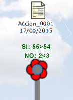
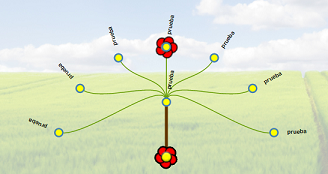
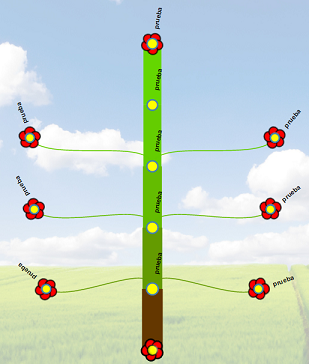
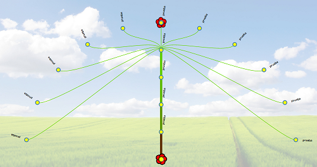

Nabú
Dios babilonio de la sabiduria y la escritura
1. Introducción
1.1 ¿Que es Nabú?
Nabú es una herramienta para tomar deciones consensuadas en grandes grupos cooperativos.
Nabú nace de la necesidad de facilitar y acelerar el método asambleario.
No pretende eliminar las asambleas ni la comunicación personal si no ser una herramienta que complemente
los métodos actuales sobretodo a gran escala permitiendo a todos participar desde sus casas cuando les resulte mas cómodo.
1.2 ¿Como funciona?
Nabú organiza las propuestas de todos en un esquema por niveles con forma de árbol, fácil de entender enseñando tendencias e intereses comunes.
Puedes crear una propuesta o votar una existente en cualquier momento. Los debates no tienen fecha de inicio ni fecha de fin.
Cuando una propuesta recibe muchos votos su rama en el árbol va engordando para facilitar su visualizacion.
Si aparece una propuesta que representa mejor tus ideales entonces puedes cambiar tus votos de lugar en cualquier momento.
De esta manera todos los temas son posibles de tratar y todas las opiniones pueden cambiar.
La interacción continua de las personas con el árbol permite al grupo conocerse y asi evolucionar hacia la creación de documentos consensuados que son
el punto de partida de las acciones reales del grupo.
1.3 El árbol
El arbol se compone de ramas y propuestas. Cada propuesta es un trozo de texto del documento a debatir.
Las propuestas que parten de la raiz del árbol (nivel 1) determinan el tipo de documento a debatir y la introducción al tema,
mientras que las siguientes (niveles mayor a 1) son propuestas de mayor detalle del documento seleccionado. De esta manera el documento es
escrito y discutido gradualmente por niveles de detalle. Al llegar al ultimo nivel, normalmente 5, el documento ya esta escrito en su totalidad.

Los documentos se escriben desde la raiz
Una propuesta puede tener varias ramas hijas que representan variantes de propuestas de mayor detalle a la propuesta inicial.
Si estas de acuerdo con una propuesta de nivel 1 pero no con su propuesta de nivel 2 entonces puedes crear otra propuesta de nivel 2.
De esta forma das por aceptada la propuesta de nivel 1 pero aportas una variante de detalle para el nivel 2.
Asi se define el árbol de propuestas.

El arbol se compone de propuestas y sus variantes de mayor detalles de todas las personas.
El árbol es, en todo momento, la representacion de los intereses actuales del grupo.
1.4 Modelos de documento
Los debates comienzan al crear una propuesta de nivel 1 y seleccionando un modelo de documento.
Estos modelos determinan que información proponer para cada nivel del árbol. La información introducida va desde una
propuesta mas abstracta (nivel 1) a una propuesta mas concreta (nivel 5).
Esto permite comenzar por una introducción y llegar gradualmente a una propuesta de detalle final como,
por ejemplo: presupuesto y plazo de entrega.
Existen modelos de documentos diseñados para cada tipo de debate que realiza el grupo.
Como por ejemplo:
| Acción | Define el modelo de un documento para debatir una acción dentro del grupo |
| Comisión | Define el modelo de un documento para debatir la creación de una nueva comisión |
| Evento | Define el modelo de un documento para debatir la organización de un evento |
| Metodología | Define el modelo de un documento para debatir la creación de una nueva metodología organizativa |
| Modelo | Define el modelo de un documento para debatir la creación de un nuevo modelo de documento |
Estos modelos son sugerencias predefinidas y pueden varias o definirse nuevos modelos según la voluntad del grupo.
El modelo de documento de Acción, por ejemplo, se compone de los siguientes niveles:
| Modelo de Acción |
| Nivel 1 del árbol | Resumen y motivación |
| Nivel 2 del árbol | Objetivo a lograr
Descripción
A quien va dirigido |
| Nivel 3 del árbol | Materiales necesarios
Software necesario
RRHH necesarios |
| Nivel 4 del árbol | Fases de la implantación |
| Nivel 5 del árbol | Presupuesto y plazo de entrega |
|

|
Existen diferentes modelos para diferentes tipos de debates y es posible agregar nuevos modelos para futuras necesidades.
El modelo de documento dirige la correcta confección de una propuesta completa
Tu propones y Nabú escribe
1.5 El consenso
La meta es la unidad, no la unanimidad
El árbol tiene por objetivo escribir documentos de consenso.
Un documento escrito completamente (todos sus niveles propuestos) no admite la creacion de mas propuestas y alcanza el consenso cuando se cumplen dos condiciones:
- Hay una mínima cantidad de personas que han votado ese documento
(personas que apoyan esta propuesta de documento)
- Hay pocas personas que hayan votado otra variante de ese documento
(personas que NO apoyan esta propuesta de documento)
Estas condiciones dependen de dos valores que son fijos para todo el árbol y se definen a partir de la capacidad del grupo de cooperar en crear consensos.
Los valores necesarios para alcanzar ambas condiciones se enseñan en el panel izquierdo.
Un usuario activo es aquel que entra al sistema al menós una vez semanal.
Esto asegura la participació de una mínima cantidad de usuarios en la toma de decisiones.

60% de votos necesarios.
No mas de 5% de votos en contra
Cuando un documento esta escrito completamente nabú enseña que tan cerca del consenso se encuentra.
|
|
No hay apoyo suficiente
y hay demasiados
votos en contra
|
|
Hay apoyo suficiente
pero hay demasiados
votos en contra
|

|
Se ha generado
un documento de consenso
y el debate queda deshabilitado
y marcado en gris
|
Cuando un documento alcanza el consenso adquiere la fecha actual y su contenido es inalterable,
se considera una decisión aceptada por el grupo y pasa al módulo de planificación para su posterior realización.
Aparece un icono que lo representa alejandose del árbol y el debate queda deshabilitado y marcado en gris.
Ahora puedes quitar tu voto para usarlo en otro debate.
Picando sobre su icono puedes consultar el contenido del documento consensuado.
Un documento consensuado es el fruto del árbol y se logra cooperando en grupo.
El grupo ha hablado.
2. ¿Como se usa?
Cada persona tiene una cantidad fija de flores con las que puede crear nuevas propuestas o votar otras existentes.
Esta cantidad es la misma para todos los usuarios garantizando la igualdad en la participación de los debates.
Las flores que no se mueven se marchitan y caen automaticamente al cabo de 2 meses, quedando libres para volver a usarlas.
Esto mantiene el árbol limpio de debates estancados y de usuarios que dejan de usar el sistema.
Cada vez que mueves una flor de sitio el tiempo vuelve a comenzar.
Las nuevas propuestas de debate (nivel 1) se agregan por los laterales (derecha e izquierda alternadamente)
esto mantiene en la zona central del árbol los debates mas activos y antiguos.
Al picar en cualquier propuesta del árbol podrás ver las siguientes opciones:
 |
Descargar documento: Podrás descargar una versión preliminar del documento según la propuesta seleccionada.
Activar/desactivar vista lateral: Podrás ver el contenido al picar sobre cualquier propuesta del árbol.
Vista de documento: Podrás ver el documento en orden natural de lectura
Agregar/Quitar flor: Te permite votar una propuesta o quitarle el voto.
Agregar propuesta: Debes completar el texto de la propuesta para el nivel seleccionado y definir un titulo corto para enseñar en el árbol.
Este proceso consume una flor de tus flores disponibles
|
Si quitas la ultima flor de una propuesta entonces esa rama cae y desaparece permitiendo que el árbol pueda retoñar.
A mayor cantidad de flores mas gorda se verá la rama, esto facilita la visualización de temas de mayor interes común.
Nabú sincroniza intereses, crea unidad de grupo y provoca el inicio de acciones reales.
3. Fundamento teórico
Nabú minimiza los enfrentamientos personales y crea consciencia de grupo.
3.1 Consciencia de grupo y debates anónimos
La conciencia de grupo debe entenderse como una nueva conciencia. Como si se tratara de otra persona.
El grupo, es decir, nosotros. En este enfoque las ideas y decisiones no son de las personas, son del grupo y por lo tanto son anónimas.
Esto evita enfrentamientos personales y focaliza en las propuestas.
Nabú no toma decisiones por si mismo con ningún tipo de algoritmo o inteligencia artificial, solo refleja de forma consolidada, resumida, interactiva
y fácil de comprender el interés de todo el grupo, tendencias y temas ruidosos. Lo que permite a todos evolucionar sus opiniones personales
y construir consensos que provocan acciones reales. De esta manera todos tomamos las decisiones y nadie en particular.
3.2 Evolución iterativa
El consenso se alcanza en el tiempo a través de una evolución iterativa. Las personas
expresan sus intereses, lo cual se refleja instantaneamente en el árbol y lleva a evolucionar y cambiar sus intereses personales. Así sucesivamente
hasta alcanzar el consenso. Ya no existen personas culpables de los fracasos. El exito es de todos y el fracaso tambien.
3.3 Competencia o consenso
Si las personas evolucionan sus intereses buscando un consenso grupal por encima de sus deseos personales entonces el proceso convergerá tarde o temprano a algún
consenso. Si por el contrario las personas mantienen un espíritu competitivo entonces el proceso diverge. Este estado de divergencia es visible
en el árbol y permite comprender que ese debate nunca alcanzará el consenso a menos se abandone la competencia y se modifiquen los intereses a alguna propuesta
que considere mejor el bien común.
|

patrón de divergencia
|

patrón de consenso
|
|

patón de divergencia
|
3.4 Espíritu cooperativo
Nabú asume un espíritu cooperativo del grupo. Al menos de la mayor parte. Por esta razón el estatuto que justifica la existencia del
grupo debe estar siempre presente para recordarnos porque estamos aqui y ser consecuentes. Si no hay espíritu cooperativo no hay consensos, no hay acciones y el proceso iterativo no evoluciona.
El consenso es un proceso cooperativo
4. Módulo de noticias
El módulo de noticias permite a todas las personas notificar al grupo la situacion actual, desempeño y realidad en las consecuencias de las decisiones tomadas anteriormente.
Estas noticias son el "feedback" que permite cerrar el gran ciclo evolutivo (decision, planificacion, accion, noticias). En base a estas noticias se generarán nuevos debates y ciclos de mejora.
El espacio de noticas es el sitio apropiado para documentar los hechos y justificar situaciones basadas en el conocimiento y experiencia personal.
Una noticia si que debe tener un autor y/o referencias que den soporte a la información presentada.
- No todas las personas participan en noticas
- No todas las personas participan en debates
- No todas las personas realizan las acciones
El sistema pretende proveer espacios de participación para todos los intereses.
Ambos módulos, debates y noticias, estan intimamente relacionados.

noticias y debates
El módulo de noticas aún no esta implementado
5. Motivación del proyecto
El método asambleario es sólido, maduro y bien conocido, sin embargo muestra graves problemas al aplicarse a grupos grandes.
- Las asambles requieren presencia física de las personas
- El grupo presente acaba siendo reducido y no representa al grupo total
- Los temas a tratar y el tiempo necesario son demasiado y la orden del dia no refleja los intereses de todos
- Se crean enfrentamientos personales que separan al grupo
- Imposible de distribuir
- Imposible de escalar
Finalmente el consenso se vuelve tan complicado que el avance del grupo se bloquea. Al no poder tomar decisiones con agilidad la accion se acaba realizando
por voluntad propia y sin el apoyo del grupo, la interaccion entre personas se complica al no haber un plan claro y
personas con interes de cooperar en la realizacion de acciones acaban desistiendo por falta de claridad en lo que se quiere, y en como se quiere, hacer.
Una metodologia agil, clara y distribuida es necesaria para separar las decisiones de las acciones.
- Que aquellas personas que solo quieran aportar informacion al grupo puedan hacerlo
- Que aquellas personas que solo quieran intervenir en las decisiones puedan hacerlo
- Que aquellas personas que solo quieran cooperar en las acciones puedan sentirse realizadas
Este factor es clave para mantener la unidad, el avance y la salud del grupo.
6. Realización
Idea y desarrollo lania@cooperativa.cat
Comisión de informática de la CIC
Con especial agradecimiento a Duub y Pablo